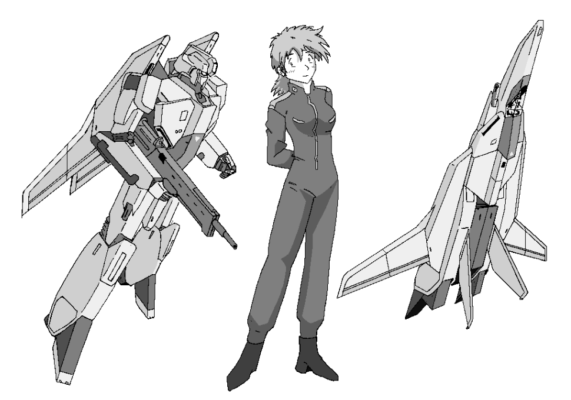

「・・・・・・で？君は本当に、あのコウサカ少尉なのか？」
「だから中尉ですってば」
冷房のよく効いたオーディス基地の司令室で、二人はとりとめのない会話を繰り広げていた。
机越しに目の前の女性を動揺しながら見つめているのは、第５飛行連隊を束ねるクボタ大佐。そして、そのクボタ大佐と揉め事を演じている目の前の女性が、コウサカ＝クスト少尉「だから中尉だって言ってるだろ！！」失礼、先程のゴタゴタのせいで、彼女もかなり動揺しているらしい。「『彼女』なんて呼ぶな！俺は男だぁッ！！」
「ううん・・・・・・私には未だに納得がいかないんだが」
「私だってそうですよ！でも、でも・・・・・・」
彼も彼女も大いに動揺していた。何せつい昨日まで普通の若手士官だった青年が、一瞬にして可憐な女性士官に変身してしまったのだから・・・・・・。
機動妖精撫子
作 ＴＲＡＣＥ
宇宙暦１０２年９月。
比較的戦況の安定していた欧州地区で、かなり大規模な戦闘が発生した。
統合軍コンスタンツ研究所襲撃。
同研究所にて被検体とされている少女を奪取するべく、コスモ同盟軍のエースパイロット・オリンポス大尉率いる精鋭部隊が襲撃を敢行したのである。対する統合軍は試作機ＸＴＸ−０１ＳＣセイバークラフト３号機を擁するマキシム少佐の指揮する巡洋艦アイネイアスを中心とした独立部隊からなる防衛隊を結成して対抗。一時は被検体の少女がコスモ軍の手に渡るも、かろうじて奪回に成功。以後、少女は保護される形でアイネイアスに同行することになる。
なぜ、たった一人の少女を巡って大規模な攻防戦が繰り広げられたのか。
それは、彼女の“力”が、今次大戦を大きく左右することになるからである。
フライト２．タイムリミットは１２時間
基地の待合室で、クストはひとりベンチに腰掛けていた。
「はぁっ。俺はこれからどうしよう・・・・・・」
軍服を脱いだインナーシャツ姿のまま、どっかと寝そべる。
ふと視線を下ろせば、そこにはつい数時間前まである筈のなかったブツが二つ。
（触って・・・・・・みたいけど・・・・・・）
それは軍事境界線を跨ぐのと同じくらい勇気のいることでもあった。ここから先は、未知の領域なのだ。
しかし、これは自分の身体だ。銃殺されるわけもないし、誰にも迷惑はかけていない。それにこれから付き合うことになる身体、早いうちからいろいろ学んでおかねば。
「彼女を知り己を知れば、百戦危うからず・・・・・・」
孫子の『兵法』まで引用して自分の覚悟を決めたクストは、満を持して自分の胸元にそっと、手を当ててみた。
むにっ。
「あっ・・・・・・」
我知らず微かな吐息が漏れる。
「うう・・・・・・」
「コウサカ中尉！」
「ぎくっ！？」
突然の奇襲攻撃に、クストはベンチから転げ落ちてしまった。
声の主、それは同じ部隊員のコマツ＝ユイ軍曹だった。
「痛ったぁ〜っ・・・・・・あ。ち、違うんだ軍曹、俺は別にそういうシタゴコロがあった訳じゃ・・・・・・」
「は？」
しかし当のユイはまったく気にも留めていないようだ。どうやら、クストを咎めに来たわけではないらしい。
「中尉、これを」
そう言ってユイが差し出したのは、一枚の書類が挟まれたバインダーだった。
「え？あ、ああ・・・・・・」
床に転げ落ちたままのクストは一瞬唖然としつつも、そのバインダーを受け取った。そして書類の内容に目を通す。次の作戦指令書だろうか。
「『任命書。姓名 コウサカ＝クミコ少尉・・・・・・』」
クストは書類を棒読みする。
「・・・・・・『クミコ』？『少尉』？？」
他人の物かとクストは思ったが、任命書には今の自分の、つまり女性になったクストの顔写真が添えられている。青みがかった銀色のショートヘアー。白人なみに白くてキメの細かい肌。そして、美形の部類に入る整った顔立ち。
「ぐ、軍曹。こ、コレって・・・・・・？」
「はい。本日付をもって、あなたの姓名を『コウサカ＝クミコ』として、士官名簿に登録しました」
平然と答えるユイ。
「そんな勝手な！？」
「ご安心を。クスト中尉とクミコ少尉はそれぞれちゃんと全くの別人として登録してあります。そうでないと、紛らわしくなるでしょうから」
「いや、訊いてるのはそういう事じゃ・・・・・・」
「あ、『少尉』って所ですか？クミコ少尉は士官学校での成績優秀により、特例的に繰り上げ卒業。本日付を持って、第１０５独立小隊に配属、ということになってます」
「いや、そういう事でもなくて・・・・・・」
「そうですね。別に名前が問題ではありませんね。では、ついてきて下さい」
「え？」
「女性士官の制服、ちゃんと用意しましたよ。サイズが合うか分かりませんので、まぁ一緒に採寸しましょ」
「じょ、女性士官の制服・・・・・・」
つまり、今ユイが着ている物と同じである。色は男性と同じライトグレーだが、さすが女性用だけあって、ミニスカである。
「うう、そんな・・・・・・」
早くも目の前が真っ暗なクミコ少尉であった。一方、別の待合室では。
「あーっ！あのカワイコちゃんが、クストの野郎なんて・・・・・・」
ギアナが唸り声を上げて、どっかとベンチに腰を下ろした。
「さっきからそればっかですね」
「ロップ。お前さんだって思わないか？あのカワイコちゃんとクストの野郎とマゼンタ大尉が組んで、芝居でも打ってんじゃねーのか？」
「無理ですよ。テンペストは単座式で、後ろの補助席には誰も座ってませんでしたし。大尉の説明を信じるしかありません」
「そう、そのマゼンタ大尉だ！」
「はぁ？」
ロップのボヤキ声にも構わず、ギアナはおもむろに立ち上がった。
「あのマゼンタ大尉が全て悪いんだ。何が新型ＯＳだ。パイロットの性別を変えるようなヘンテコなＯＳなんか、あってたまるかってんだよ」
「はぁ」
「『はぁ』じゃねーよ。おいロップ。お前、コマツ軍曹とは以前からの知り合いだろ？訊きだせ」
「ぼ、僕がですか！？」
「そうだ！彼女を知り、己を知れば百姓イッキって言うだろうが！！」
「はぁ？それを言うなら『百戦危うからず』では・・・・・・？」
うーん。このネタ、分かる人がいてくれれば嬉しいのだが（笑）。
「全くもう、人使いの荒い人だなぁ。つべ、こべ」
「つべこべうるせぇ。上官の命令は聞けないのか？先任中尉は俺なんだぞ！」
もっともロップは伍長だ。先任中尉もへったくれもない。
だが、もういい加減相手にするのも飽きたようだ。ロップは渋々承諾し、駄々をこねるガキのような上官に対しくるりと背を向けた。
「いいですけど、後でなんか奢って下さいね」
応じたギアナはニヤッと笑った。
「分かってる分かってる。お前さんもマゼンタ大尉の手にかかって女の子になって帰ってきたら、二階級特進させてやるって」
「縁起でもないっ！！」さらにもう一方。基地内の、とある場所の女性用トイレにて。
先程から、一区画がずっと鍵がかかって使用中のままだった。さらに、低い呻き声がずっと鳴り響いている。耳をそばだてて聞いたとしたら、こんな台詞が聞き取れるだろう。
「あたしのクスト中尉が、あたしのクスト中尉が・・・・・・ああ、あたしって、何で男運に恵まれないの・・・・・・？」
ふと床を見れば、微かに水の後も見える。水道管から漏れた物ではない。クストに一目惚れしていた、ミィ＝ケイツ曹長のものだ。もちろん、呻き声の主も彼女である。
「ロップなんてひ弱で頼りないし、マゼンタ大尉は不摂生だし、以前までうちにいた男どもはスケベなおっさんだったし、ようやく年頃のカッコイイ人と巡り会えたと思ったのに・・・・・・。ああ、あたしって不幸なヒロイン・・・・・・」
その不幸なヒロインは、その後もしばらくトイレの個室で泣き続けた。
「もう、何で僕が・・・・・・」
ロップは今、ギアナ中尉の特命を受けて、ユイやマゼンタにあてがわれた研究室の前に立っていた。マゼンタはこの場にはいないらしい。これから潜入してユイを捕まえ、テンペスト１号機に搭載されたＯＳの話を何としても訊きださなければならない。そうでないと、あのわがままな上官は何を仕向けてくるか分からないのだ。
幸い、扉に鍵はかかっていなかった。扉を少し開けて、中の様子を窺う。
「きっ、きつい！」
その声はクストの声だ。もっとも「女性の」クストの声、つまりクミコの声だが。
「我慢して下さい！女たるもの、これは絶対に習得しなければならないものなのです！！」
ユイの声も聞こえる。だが、肝心の二人の姿は物影に隠れて見えない。
「何をやってるんだ、二人は？」
好奇心に駆られて、ロップはそっと扉を開けて部屋の中に入り込んだ。
しかし辺りを見回してみると、いかにも研究室と言った感じの部屋だ。パソコン数台とそれに接続する大容量スーパーコンピューターが一角を占拠し、残りの机や棚には各種資料が所狭しと並んでいる。しかも軍の研究所なのに、怪しげな液体の入った試験管やらラベルのない怪しげな薬品ビンやらが至る所に置かれている。どちらか言うと、気違いマッドサイエンティストの秘密の部屋、と言った趣だ。
「確かにこんな具合なら、性別を変える薬品ぐらい作っててもおかしくないかも」
言ってから、ロップはぞっとした。
「マゼンタ大尉の手にかかって女の子になって帰ってきたら、二階級特進させてやるから」
冗談に過ぎないはずのギアナの言葉が、がぜん現実味を帯びてきたのだ。
沸き立つ恐怖心をそらす為に、ロップは当初の任務に専念することにした。
その間も二人の声は聞こえてくる。
「あっ・・・・・・ああっ・・・・・・は、早く・・・・・・」
「はいはい。えーと・・・・・・８６で・・・・・・５９で・・・・・・う〜ん、なかなかの体格ですねぇ」
しかもクミコの声音はかなり色っぽかった。
しかしロップはぞっとする悪寒を抑えるのに精一杯で、それに気付かない。そのまま物影からそっと、二人の様子を窺った。
だが、次の瞬間。
「うわああああああああっ！？」
絶叫。
目の前のクミコは、素っ裸だったのである。ユイにせっつかれて、採寸のついでに女性としてのトレーニングを受けさせられていた（笑）真っ最中なのだ。
まだ純真なロップ伍長にとって、それはあまりに衝撃的で悪影響な映像だった。鼻から真っ赤な血を噴射し、そのまま後ろのめりに崩れ去った。不名誉の戦死、である。
「あれ？ロップ・・・・・・」
これを見たクミコは、ただ呆然とするばかりだ。当然「女の裸を見られた」なんて絶望感はまだ全く認識に持てない。
「少尉、こういう時は『きゃあ——っ！み、見ないでッ！！』って叫ぶモノなのよ」
「そ、そうなの？」
「さて、次です。あなたのサイズに合うブラがこれだから、はい、教えたとおりにつけてみて」
「う、う〜ん・・・・・・」
さて、もめ事の張本人、イースト＝マゼンタ技術大尉は。
「よし、問題ない。『ナデシコ』は中尉のバイオリズムと完全にリンクしている」
マゼンタは誰もいない格納庫でひとり、戦闘機形態で安置されているテンペストの１号機から端末を引き出してノートパソコンに繋いでいた。ディスプレイには無数の情報が表示され、常人には読めないほどのスピードでページダウンしていく。
「おっと、もう『少尉』だったな、彼女は」
そして、独り言をつぶやく。
「頼むぞクミコ少尉。テンペストの制式採用は、お前さんの撃墜スコア次第なのだからな」
テンペストを見上げるマゼンタの目は、隊員たちの印象とは対照的に、まるで子供を見守る親のように優しげな目つきだった。
士官学校のエリートで、単位半ばににして特例的に繰り上げ卒業。おまけに可憐で、清楚な白人女性。何処から流れ出したのか、コウサカ＝クミコ少尉の噂は、ほんの数時間でオーディス基地中に広まった。もともと男性中心な軍隊だけに、ある意味仕方ない事かもしれない。
しかしそれはクミコ本人にとって、それは周囲の視線攻撃がひっきりなしに襲ってくる地獄の日々の始まりを意味するものでしかない。
（ああ・・・・・・そんな目で俺を見ないで）
実際、いま歩いていても擦れ違う将校・下士官・工兵・メカニックとさまざまな職種の人々が振り返っては自分を珍しげな目で見るのだ。ある者はミニスカからスラリとはみだした太モモに。またある者はストレートに胸元に。さらにある者はじかに顔を。中には出会い頭に絡んでくる不逞な輩もいた。
「クミコ、さんっ！」
「え？」
「俺は人呼んで『安南の狼』ことオーディスのトラでさぁ！よろしくッ！！」
「は、はぁ・・・・・・・」
当たり前だが、クミコはこういうタイプの男性から逃れる術を全く知らない。ただオドオドするだけだ。
結果的にその態度が、なおさら相手の食指を揺さぶることになった。早い話、カモと見なされたのだ。
「今度の非番に、俺と一緒に一杯、どう？」
「あ、あの、それは・・・・・・・」
「大丈夫。酔い潰させて、ヤッちゃうって訳じゃないから。だからね？いいっしょ？いいっしょ？」
「いえ、あの、わ、私は別に・・・・・・う、うーん・・・・・・」
「さぁ、返事、返事！」
「それくらいにしとけ、トラ」
背後から突然声がかかった。聞き覚えのある声だ。
「何だよグエン、俺のデートの邪魔すんなよ」
「彼女迷惑してるだろ。それより早く、仕事、仕事、仕事！」
「へいへい。じゃあクミコさん、また今度ね」
いかにも名残惜しげに手を振って、相手は去っていった。
「やれやれ・・・・・・」
相手が去った途端、グエンは大きなため息をついた。
「あ、あの・・・・・・」
クミコはためらいがちに口を開いた。クストとしては顔見知り同士の関係だが、もちろんクミコとしては初対面の男性だ。どう接していいか、よく分からない。
「あ・・・・・ありがとう、ございました」
「あ、ごめん。いきなりで」
それはグエンも同じようだ。困り果てる女性を救ったまではいいが、そこから先どうすればいいか、よく分からない。
「僕、グエン＝ワンス中尉です」
「わ・・・・・・私は、コウサカ＝クミコ少尉です」
とりあえず名乗った二人。
「じ、じゃあ、僕も仕事があるから」
照れくさいのを隠すように、グエンはそそくさと立ち去って行った。
だが、残されたクミコはさらに煩悶することになる。
（ど、どうしよう！？グエンは俺の正体がクストだって全く知らないぞ。これから先、どうやってグエンと付き合っていけばいいんだ・・・・・・）
ブリーフィングルーム。
１０５小隊の面々に集合がかかった。これから先の活動予定について説明が行われるらしい。
すでに室内にはクミコ以外の隊員が集まっていた。
「ああ、あたしのクスト中尉が・・・・・・」
「いつからお前さんのモンになったんだよ」
「それに、さっきからそればっか言ってますよ」
そんな会話が続いていると、クミコが室内に入ってきた。
「遅せーぞ、く・・・・・・クミコ、さん・・・・・・」
いつものように接しようとしたギアナだったが、クミコの顔を見た途端それは出来なくなった。クストとクミコが同一人物、頭の中では分かっていてもやはり男の性、どうしても納得出来ない。
「お願いだから、もうちょっと早く来て・・・・・・ね」
「ごめんごめん！でもこっちだって大変なのよ。トイレが混んでて困っちゃったんだから」
「へ？」
目を白黒させる一同。別にクミコの言い訳が理由ではない。女性的な口調に目を白黒させたのだ。
クミコもそれに気付いて、明るい口調で答える。
「あ、この話し方？コマツ軍曹が『女性なんだから女の子らしい話し方した方がいいですよ』って言うから、ネ？」
そう言って彼女はにっこり。しかしその口元は微妙にヒクヒク引きつっていた。無理して微笑んでいるのは傍目から見ても明らかだ。
「軍曹、アンタねぇ」
「何でそういう余計な事言うのよ、ユイ！」
矛先はユイに向けられた。
「あら、クミコ少尉に男言葉がお似合いだとお思いですか？」
「いや、そういう事じゃないけど、せめて口調はクストのままでいてくれないと、変な気を起こしそうで・・・・・・」
「とにかくっ！クスト中尉を元に戻す方法はないの！？」
「あ、それはですね・・・・・・」
ユイが楽しそうな口調で説明を始めようとした、まさにその矢先。
「うっっ！？」
呻き声。声の主はクミコだ。
「く、苦しい・・・・・・」
膝を降り、その場にうずくまって胸を押さえる。
胸が押し潰されるような感覚だ。ろくに呼吸することも出来ず、頭もぼんやりしてくる。あの時、テンペスト１号機で女の声を聞いた時の苦痛とよく似ている。
「うう・・・・・・」
「おいクスト！？しっかりしろ！」
ギアナがクミコに駆け寄り、その背中をさすってやる。ミィもロップもただ事ではない様子に戸惑うばかりだ。
もっとも、ユイだけは別の反応をした。
「もうそんな時間？」
腕時計を覗いて時間を確かめたのである。
「ううう・・・・・・」
クミコの呻き声はなおも続く。かん高い嬌声から、次第に重病患者のような重苦しい声になってきた。いや、違う。声のトーンそのものが低くなってきているのだ。
「ん・・・・・・？」
ギアナも、背中をさすっていた手から伝わる感触が微妙に変わってきたのに気がついた。柔らかくなだらかな感触が、硬く引き締まった感触になっていく。そう言えば視界の片隅に見えていたクミコの銀色の髪の毛が、いつの間にか黒髪に変わっていた。
「ま、まさか・・・・・・」
とっさ、ギアナはクミコの肩を掴み、自分の方に振り向かせた。掴んだ肩は女性の物にしてはかっちりとした骨格だった。
振り向いたクミコの顔は、紛れもなくクストの顔だった。
「あ、クストに戻った・・・・・・」
「・・・・・・え？ホント？？」
訊き返すクスト。すでに胸を押し潰すような痛みは消え、普通に息が出来るようになっていた。
しかし、その代わりなのか肩がやけに狭苦しい気がする。
そんなクストの様子にユイはにっこり笑って、中断していた説明を再開した。
「女性になっている時間は、ＯＳ起動時から１２時間なのです。つまり、１２時間すれば、あなたは元に戻れるってことなのです」
「そ、そうなの？」
「マゼンタ大尉から聞いてませんでしたか？」
「知ってんだったら早く言ってよ！」
怒鳴り返すクスト。
その一方で、なぜ肩が狭苦しいのか理由も分かった。いま自分が着ている、女性士官の制服だ。
いてもたってもいられず、クストはとっとと上着を脱ぎ捨てた。今の自分には小さめのサイズで破りそうになったが、これで肩が自由になる。
「あ〜〜〜〜」
クストは大きく息を吸い、吐き出してみた。
当たり前だが、やはりこの身体が一番落ち着くのだ。
だが。
「イヤぁ——っ！！クスト中尉の変態っ！！」
「ええっ？？」
いきなりのミィの変態呼ばわり。クストに思い当たる節はない。
「・・・・・・あ！」
いや、あった。今の自分の姿だ。
上着だけを脱いでインナーシャツ姿になったと思っていたが、インナーシャツは着ていなかった。着替える時、シャツに代わって別の物を身に付けていたのだ。その別の物とは、ユイによって無理やり着装された“ブラ”であった。それに、下、つまりミニスカはまだ元のままだ。こんな格好ではまさに「変態」そのものだ。
「うわああああああああっ！？」
それはまだ人生経験の足らないクスト本人にも、それは苦痛を強いる格好だったに違いない。絶叫したクストはその格好のままブリーフィングルームを飛び出し、廊下を疾走していった。誰もそれを見ていなかったのは不幸中の幸いだった。そしてクボタ大佐の説明が始まっても、彼は戻ってこなかった・・・・・・。
※ ※ ※
ではクボタ大佐に代わって、１０２年９月現在の東南アジアの情勢について簡単に説明しておこう。
この地域は採掘資源が豊富ということもあり、またその資源を独占していた統合政府への反感もあって、早い段階からコスモ同盟軍の占領地帯と化した。その後、各地の軍閥によって「解放」を謳った地方政府が樹立されたが、結果的に殆どが長続きしなかった。もともと軍閥は統合政府内部での派閥抗争が元で成立した物なので、結局が私利私欲を貪る連中だけだったのである。
そんな中で、統合軍にトルーパーの大量配備が始まった１０２年４月のエディルネ大攻防戦以降、統合軍の勢力が各地のコスモ同盟軍を駆逐し始めた。これは、軍閥政府に愛想をつかした地元民衆の協力があってのことだった。そんな中、月の裏側のＬ２コスモ帝国から直接赴いた降下部隊の占領するシンガポール周辺の統制された治安は、特筆に価するものであろう。
地形的にも戦略拠点と言ってもいいシンガポール。ここをコスモ軍が守りきるか、統合軍が奪い返すかで東亜戦線の趨勢が決するのだ。
※ ※ ※
牽引車に引かれて、最終整備の終わったテンペスト２号機がゆっくりと基地の格納庫に入ってきた。各所に整備済を示すラベルが貼られ、砲門にはシーリングが施されている。まだメインスラスターが焼けただれておらず、黒金の光沢を放っているさまがいかにも新品といった趣だ。
「よーし、傷一つ付けるなよ。何せ、俺の愛機になるんだからな」
新しい己の愛機に、ギアナは作業を手伝いつつすっかり見とれていた。
その視界に、なにやら巨大な物体が運ばれてくる様子が飛び込んできた。
「何だありゃ？」
トルーパー用のメタルソード・・・・・・にしても、あまりにその刃が巨大すぎる。普通のメタルソードはいくら長くてもせいぜいトルーパーの脚部と同じぐらいだが、いま納品されてきたソードはその全長がほぼトルーパーの全長と同じくらい、約１３メートルだ。それに刃の腹の部分の広さも並みではない。
「で、でかいな」
「１号機用の大型ヒートソードだよ」
答えたのは、２号機の搬入を指揮しているマゼンタだ。
「ＸＴＦ−０５テンペスト３機は、それぞれ用途に応じて設計が変更されている。まず１号機が、この大型ヒートソードや腕部プラズマストライカーによる格闘戦仕様、お前の乗る２号機がプラズマランチャー及びプラズマセイバー搭載の高火力汎用型、ケイツ曹長の３号機が大型レーダーセンサーとＥＣＭを搭載した電子戦仕様だ。それ以外は基本的に同一設計。無論、変形機構を搭載している」
「何で３種類に分ける必要があったんだ？」
「補給の事を考えると３機とも同一仕様にした方が良いのだが、何せ実験機だからな。いろいろな状況でのデータ回収がしたい。だからこの３機は実戦投入するのだ。戦場でなければ膨大なデータは採集できないしな」
マゼンタの口調はやけに早口だった。どうやら自分の得意分野の話になると、饒舌になるようだ。もっとも、ギアナにそんな事は問題ではない。
「実戦でデータ回収、つまりは絶対に壊すな、たとえ死んでもデータだけは守れ、って事か」
「そうだ」
皮肉混じりに言ったつもりのギアナだったが、マゼンタはあっさりと頷いた。
その二人の傍らで、クストは例の大型ヒートソードの搬入を手伝っていた。
「そうそうこっち。ゆっくり、ゆっくり」
クストはソードを載せたトレーラーを所定の位置に誘導していた。何せブツが巨大なだけに、周囲にぶつけそうだ。
そんなクストに歩み寄っていく人物が一人。クストとは士官学校の同僚、グエンだ。
「なぁくスト」
「ん？」
「クミコさんって、どんな人？」
「びくっ！？」
思わずクストは身じろぎしてしまった。グエンの質問がストレートだったせいもある。
「いや、あ、あの、俺、いや彼女は・・・・・・」
傍目にも分かるほどクストは狼狽していた。気候のせいではない汗を額にどっぷりと掻き、指先がプルプル震えている。
「？」
当然グエンには、クストが狼狽している理由は分からない。ただ首をかしげるだけだ。
「そうか！お前も、クミコさんに惚れたか？」
「ば、馬鹿！何でそんな紛らわしいことを・・・・・・」
「妬くな妬くなクストくん、君の気持ちは分かるよ。クミコさんって、どこか綺麗な人だもんねぇ」
「う、う〜ん・・・・・・」
クスト、グエン、そしてクミコ。あまりに複雑すぎる三角関係に、頭を抱えずにはいられないこの頃のコウサカ＝クストだった。
１１００時。
それは本日の作戦開始時刻である。１０５隊としては、これが最初の実戦だ。
偵察隊が発見したコスモ軍の野戦基地の占拠、破壊が今回の任務である。まずは基地の陸戦部隊が先行し、１０５隊がこれを上空から支援する形になっている。野戦基地の規模はそう大きなものではなく、陸戦部隊も一個小隊のみが行動する。
作戦開始１時間前。すでに陸戦の小隊は出発準備を始めていた。専用のトレーラーで目的地近くまで移動、それからは徒歩で移動することになっている。もっとも実際に兵士が足で歩く訳ではない。徒歩で移動するのはトルーパー３機、機種はＸＴＭ−０２Ａサックスだ。
サックスは以前クストも乗っていたＸＴＭ−０１ナイヴスの簡易生産型で、ナイヴスを質で勝負する機体とすれば、サックスは数で勝負する機体だ。
そのサックス３機は、丁度トレーラーへの固定作業を終えたところだった。ベッドに仰向けで寝そべるような形でトレーラーに固定されているさまは、どことなく担架で運ばれる怪我人のような印象もある。無論このサックス３機は怪我人ではない。整備班の手で最高の状態に整備され、出撃の時を待つ兵士たちだ。
１０５隊は先に出発する３機を見送りに、格納庫へと足を運んでいた。
汽笛のようなクラクションを鳴らして、トレーラーは１台ずつ格納庫を出て行った。１台出ていくたび、周囲のメカニックたちが声援を送り、スパナを持った手を振る。
「頑張ってね！」
「壊すんじゃねぞ！今度ぶっ壊したら、磨いてやんねーからな！！」
「あとで一緒に飲もうぜ！」
その言葉の裏には「帰ってこないかもしれない」という微かな不安もある。何も戦争だからといって目の前で人が死ぬ訳ではない。別の戦場で同僚の戦死を聞く事もあれば、帰投時刻を過ぎても帰って来ず、そのまま戦死扱いになる者もいる。だからこういう平静な言葉で見送りの言葉をかけるのだ。「死ぬなよ」ではプレッシャーが重すぎる。
トレーラーが見えなくなると、クストは隊の面々に視線を走らせた。
「さて、俺たちもさっさと準備するか」
その言葉に、ギアナもミィもたくましげに頷いた。第１０５独立小隊、彼ら彼女らの戦いは始まったばかりなのだ。
「１０５−２号機。１号機及び３号機より先行して下さい」
オペレーター役のユイのナビゲートに従って、テンペスト２号機が基地の滑走路へと進んでいく。簡単な役回りのように見えるが、リアルタイムに入ってくる情報を振り分け、戦場のパイロットへと伝えるには、冷静な判断力と集中力を備える人材が必要不可欠だ。ちなみにロップはその手伝いという地味な仕事である。
「俺が先なの？了解。新型の初戦闘、お披露目と行こうか！」
２号機のコクピットでギアナが答え、スロットルレバーをゆっくりと押し広げていく。慣性飛行は済ませてあるので、もう機の操縦には慣れている。機体後部の２機のメインエンジンが唸りを上げ、メインスラスターから蒼白い炎が噴き出した。
「ではアルバート＝ギアナ、１０５−２号機、出る！」
その言葉とともに２号機は一気に加速。数秒後には、機首が持ち上がって離陸した。
同時に、クストの乗る１号機も発進準備を進めていた。
「コウサカ中尉、どうぞ」
コクピット横のサブモニターに映し出されたユイが、発射許可を告げる。
クストはそれに頷き、スロットルレバーに手をかけた。
「・・・・・・」
ふと、コンソールの一角に目をやる。
そこにはいかにもとって付けたようなボタンスイッチのパネルがあった。
「『ナデシコ』の発動スイッチはこれだ。危なくなったら、迷わずに押せ。すぐに起動する」
発進直前、マゼンタが直に説明してた言葉が頭によぎる。
（でも、その代償が１２時間のアレだからなぁ・・・・・・。出来れば使わずに済みたいけど・・・・・・）
クストは心の中でつぶやいた。
すでにエンジンの暖機は十分。後はスロットルを押しやれば、いつでも離陸できる。
「コウサカ＝クスト、１０５テンペスト１号機、行きます！！」
１号機がクストの掛け声に応じて滑走路を駆ける。そしてその着陸脚がアスファルトから離れ、１号機は大空に舞った。尾翼に誇らしげに描かれた、灰色の狐とともに。
戦端が開かれた。
サックスの５４ミリマシンガンが火を吹き、ジップの５０ミリマシンガンがそれに応じる。
付近の森林を遮蔽物にして攻撃できるサックスの方が、若干ではあるが優勢だ。
そして上空。
「来ました！」
３号機を操るミィからの通信。さすがに電子戦用の３号機だけあって、レーダーの精度は高い。
「ようし、じゃあおっ始めっか！」
快哉を上げて、ギアナは操縦桿のトリガーを引いた。
２号機の腹部に備え付けられた４０ミリプラズマランチャーが、超高熱のビームの弾丸を放つ。空での戦端も開かれたのだ。
そして間もなく１号機のレーダーにも反応。
クストは素早く敵機との距離を確認して、自動照準システムを呼び出した。モニター上の赤い十字が虚空の一点を指す。ロックオン。
「よーし、動くなよ！」
腹部５４ミリライフルが火を噴く。無論相手も無能ではない。急旋回して回避、なおも迫ってくる。直後、１号機と敵機は数十センチの至近距離で擦れ違った。相手が旋回する時が好機だ。すかさずクストは操縦桿脇のレバーを押し倒す。翼を閉ざし、機首を折りたたみ、１号機は瞬時にトルーパー形態に変形した。脚部となったエンジンブロックを後方に振って瞬時に旋回。トルーパーは飛行速度や航続距離では到底戦闘機に及ばないが、その分旋回速度や瞬間機動では戦闘機を上回る。
敵機の背後を取った１号機は、手のライフルで弾幕を張る。数瞬の間を置いて、敵機はエンジンから炎を噴き出した。パイロットが射出座席で脱出し、乗り手を失った敵機はそのまま失速していく。
その近くでは、ちょうど２号機と相手の戦闘機シュミッターがドッグファイトを演じている最中だった。機銃で応戦する２号機は擦れ違う直前トルーパーに変形、相手が驚いた一瞬の隙をついて左腕小型シールドからプラズマセイバーのグリップを引き抜く。グリップの先からビームで形成された刃が伸び、相手の機首を一振りで真っ二つにした。
２号機のカメラセンサーが、１号機の方向へ向けられた。２号機と３号機は１号機の二つ目ではなく、サックスのようにゴーグルのようなカメラを備えている。１号機が二つ目なのは格闘時に相手との距離を精密に測る必要があるからだ。
「初めての割にやるじゃないか、ギアナ」
「ふっ、トルーパーと操作系統が同じだからな。もう俺の手足同然よ」
それはクストも同じだった。前日に試し飛行をしていたせいもあるが、己の手足のように思い通りに動くし、まだ操縦にも余裕がある。しかし、初めて１号機に乗った時とは何かが違っていた。背中に背負った大型ヒートソードのせいもあるが、それ以上に何かが決定的に足らないのだ。
（「ナデシコ」か・・・・・・）
あの時はほとんど無意識だったが、あの時の自分はやけに勘が冴え渡っていた。完全に取り囲まれたにもかかわらず、相手の動き全てが手に取る様に分かり、その先を読んで次々撃墜することが出来たのだ。考えるまでもなく、あれは１号機に搭載したとかいうＯＳ「ナデシコ」の影響に違いない。しかし、なぜ自分は女性の身体になってしまうのか？それも今までの自分とは似ても似つかぬ可憐な姿に。あのクミコの姿には、モデルになった女性でもいるのだろうか？
『アソコニ・・・・・・』
「えっ？」
四時の方向。無意識に、クストはテンペストの頭部を戦場とは別の方向に向けていた。レーダーには反応なし。当然、青空と雲以外は何も見えない。しかし、何かが「見えた」のだ。肉眼でもレーダーでもない、何かによって。どちらか言うと第六感、いや第七感とでも言った方が近い、何かで。
クストは己の勘にしたがい、手の空いていたミィの３号機に通信を繋げた。
「ケイツ軍曹。四時の方向を調べてみてくれ」
「四時・・・・・・ですか？」
「早く！」
クストの声が荒かった。何かが気を急かせているのだ。
そしてその読みは正しかった。
「あっ、レーダーに反応！四時の方向、高速で移動する物体多数。増援部隊です！！」
「多数って！？」
ミィの声にギアナの叫びが重なる。このままでは陸上の部隊も危ない。
さらに相手も増援の存在に気付いて元気付いたか、攻撃のペースが増した。
「くっ・・・・・・！」
操縦桿をひねって回避。急な機動でＧが発生し、一瞬意識が吹き飛びそうになる。だが屈することは許されない。クストは必死で絶えた。間もなく増援部隊によって、さらに激しい回避行動を余儀なくされるだろう。そもそもこちらは３機。いくら新型といっても、これでは多勢に無勢だ。
苦しげなクストの視線が、コンソールの一角に止まる。そこには、禁断の力を発するＯＳの起動スイッチがある。
（やはり起動するしか・・・・・・）
クストは人差し指でスイッチに触れる。その指先が傍目にも分かるほど小刻みに震える。
「ええい！」
迷っている余地はない。クストはアクリル板を押し破り、中のスイッチを力一杯押し込んだ。
その直後、胸を締め付けるようなあの感覚が襲ってきた。呼吸も苦しくなる。初めて乗った時と同じ、あの感覚だ。あの時は異常事態に気が動転して、自分の身に何が起こっているのかさえ理解していなかった。しかしこれから何が起こるのかは経験済みだ。
コクピットの空気が一転するような感覚。
クストはその両目を硬く閉ざした。自分の身体が変化していくプロセスを直に見たくはない。特に胸元が膨らんでいくさまや、股の間のブツが消えていくさまは。
「うううっ・・・・・・！」
目を閉じている間も、胸の痛みは続く。次第に自分の呻き声のトーンが高くなり、パイロットスーツも少し大きめにになっていく。いや、自分の体格が細身になっているのだ。
『後ロニ・・・・・・』
「ッ！」
ハッとして目を開けた時には、すでに身体はクミコのものへと変化していた。だぶだぶになったパイロットスーツの中で、胸元だけがぴっちりしている自分の姿が呪わしい。
「くうう・・・・・・」
クストは、いやクミコは呻きながらも、すでに自機を旋回させていた。すぐに１号機を戦闘機形態に戻し、先ほどから気になっている方向へと機首を向ける。
「ギアナ、ミィ、そこの機体は任せる！」
「えっ！？く、クミコになったのね・・・・・・」
「クスト中尉・・・・・・ひ、ひどい・・・・・・」
答えが帰ってくる前にクミコは１号機を全速で飛ばした。
「おいクスト！・・・・・・じゃない、クミコか。ややこしい」
ギアナの通信も間延び気味に聞こえる。しかしクミコの意識は別の方向に向いていた。
『右ニ』
「そこッ！」
クミコは機首の２連プラズマ砲を斉射。一瞬の間を置いて、ビームの先で小さな閃光が起こる。エンジンへの直撃だ。レーダーで補足できても全く視認できない距離。まぐれ当たりにしては正確すぎる精度だ。
増援の相手はなおも迫ってくる。クミコは怯むことなく、１号機を相手の真っ只中へと踊りこませた。
「ッ！」
上に気配を感じる。そこにはちょうど相手の戦闘機が反転して、こちらに向かってくるところだった。まだ相手は照準用レーザーを照射していない。しかし、相手がこちらに敵意を向けているのだけははっきりと感じていた。
（これから撃つのか？）
クミコは一瞬戸惑ったが、すぐに機首を上方に向け５４ミリの火線を走らせた。相手は反転が完了しないうちにコクピットを撃ちぬかれ、ただのガラクタと化す。
『逃ゲル・・・・・・』
さらに今度は左後方に気配。見ると、１号機には構わず当初の支援へ向かおうとする機体が多数。
「抜かせるか！」
ここで抜かれては、ギアナやミィ、それに陸上の部隊も危ない。クミコはすぐに機首を反転させた。スロットルを乱暴に押し込み急加速。瞬時に相手の正面に回り込む。通常なら過剰なＧの負荷に負けて出来ない動作だ。
だが、クミコの身体は全く痛みを感じない。
（Ｇを感じない？）
どうやら『ナデシコ』にはパイロットの勘を高めると同時に、痛みを感じさせない一種の覚醒剤のような効果もあるらしい。クミコは頭の片隅でふと考える。しかし意識の中心は、目の前の敵を抜かせない、ただそれだけだ。
「墜ちろ！」
叫びとともに、コンソール一角のスイッチを押す。機体下面のミサイルランチャーを一斉発射。それぞれの弾頭が吸い込まれるように敵機に命中する。さらに撃ち漏らした相手に追いすがり、その頭上でトルーパー形態に変形する。相手がこちらの変形に驚く隙さえも与えず右腕のプラズマストライカーを展開し、トンファーの要領でコクピットを叩き潰した。
（なぜだ？なぜこうもコクピットを簡単に狙える？）
墜落していく機体郡を一瞥しながら、ふとクミコの頭に疑問が浮かぶ。
相手を一撃で倒すなら、当然コクピットやエンジンを狙えばいい。しかしエンジン周辺は分厚い装甲で守られているし、コクピットそのものは非常に小さい。飛ぶ鳥の頭を狙って石を投げるのと同じだ。それに相手も分かっているのだから、コクピットへの被弾だけは避けようと回避行動を取ってくる。そのため結果的に、至近距離でのドッグファイトとなるのだ。
しかし、今のクミコは違う。どんな状況からでも相手のコクピットを狙うことが出来るのだ。それも直に、ためらう事なく。
「正面から？」
敵の気配。撃ち墜そうにもライフルは弾切れだ。別に残弾数を数えていた訳ではないが、モニターを見るまでもなく分かっていた。予備弾装に交換しようにも間合いが近い。
クミコは擦れ違う寸前、とっさに変形レバーを押し倒して１号機を戦闘機形態に変形させた。背面に背負った大型ヒートソードを背ビレの如く突き上げる。天を貫く背ビレだ。敵機は回避できずに自分から背ビレに激突し、そのまま自分の勢いで左右真っ二つに寸断された。コクピットも綺麗に真っ二つだ。機転を利かせて取った対処法だったが、普段のクストでは思いつかなかった方法かもしれない。
『モウ、乱暴スル人ハイナイ』
「え？」
気がつけば、すでに周囲には自分以外動く物はなかった。ヒートソードで寸断した機体が最後だったのだ。
「７機、か・・・・・・」
クミコは自分が墜とした機の数を改めて思い返してみた。７機。エースパイロットでも１回の戦闘ではそう墜とせない数だ。それをクミコはたった一人で、それもほんの数分で成し遂げてしまった。
（本当に俺がやったのか？）
そう思って自分の手の平を見やる。紛れもないクミコ自身の少しか細い手があるだけだ。この手が操縦桿を操ってコクピットを正確に射抜き、敵機を真っ二つに裂いたのだ。
「あれは・・・・・・誰だ？」
いまさら疑問に思えたのも不思議だった。今までずっと“声”を聞き、その“声”に身を委ねていたにもかかわらず。
あれは「勘」と言うには、あまりに明瞭な響きを持った“声”だった。直接耳から聞いた訳ではないが、クミコにははっきり聞こえていた。あれは「女」の声だった。それも、何処かで聞き覚えのある女の声だった。
「俺の声・・・・・・？」
思い出してみると、確かにあの“声”はクミコ自身の声色だった気がする。しかし口調は明らかに違った。あれは紛れも無く、生粋の女性の口調だった。クミコのようなパートタイム女性とは違う、生粋の女性の声・・・・・・。
「・・・・・・あ！」
一番肝心なことを忘れていた。先ほど「ナデシコ」を起動して、自分はクミコとなったのだ。つまりこれから１２時間は、クミコとして過ごさなければならないのだ。今から１２時間後とは、２３時。つまり今日の殆どを女性として過ごす事になる。
「とほほほ・・・・・・」
文字通りトホホに暮れ、クミコは力なくシートに沈み込んだ。ついさっきまで思い悩んでいた疑問は、もうどうでも良くなっていた。これからの１２時間の試練に比べれば・・・・・・。
作戦自体は、見事大成功だった。
増援の全滅を知ったせいか野戦基地の防衛隊は即座にその場を撤退し、サックス３機からなる陸戦隊によって野戦基地は占拠。同時に敵のトルーパーを無傷で１機捕獲するという手土産付きだった。当方の被害は微小、怪我人もなし。
「クスト中尉！何であっさりクミコ少尉になっちゃったんですか！？」
「いや、だって、もう危ないと思ったから・・・・・・さ・・・・・・」
帰還後、クミコはミィの詰問攻めに付き合わされた。
「おいおいミィ。何もそこまで執拗にアタックすんなよ」
「アタックじゃありません！」
「しかし大したもんだよなぁ。一回の戦闘で７機撃墜なんて、そうそう出来る事じゃないぜ」
そう言いながら、ギアナは点検の始まった３機のテンペストに目をやった。
２号機、３号機とも大した傷はない。所々に擦過傷や機銃の掠った跡があるが、機能的にも装甲強度的にも問題のない範囲だ。しかし１号機には格闘戦時のわずかな擦過傷以外は、殆ど傷と呼べるものすらない。全く被弾していなかったのだ。
「ご苦労、コウサカ少尉」
マゼンタの声だ。テンペストと「ナデシコ」のデータ回収に現れたのだろう。
「機体にも余計な傷は付いていないな」
パイロットより機体の方が大事だとでも言わんばかりの台詞である。ギアナがそれを受け入れる筈がない。
「パイロットにねぎらいの言葉はないのかい？」
「ん？そうか、ご苦労だったな。だが比較的容易な任務だったからな」
「それにクスト、いやクミコは処方なしかよ？」
「元に戻れない訳じゃないんだから、別に問題ないだろ」
マゼンタは冷ややかに受け流した。
「コウサカ少尉！」
と、クミコを呼ぶユイの声。
「だから俺は中尉・・・・・・」
そう応じようとしたクミコだったが。
「そ、そうだった。俺・・・・・・私は、コウサカ「少尉」・・・・・・なのよ、ね・・・・・・ううう・・・・・・」
言い直さなければならない自分に、言い知れぬ虚脱感を覚えるクミコ少尉である。
「で？軍曹、俺・・・・・・いや私に何の用？」
「うふ。そんなパイロットスーツじゃい動きにくいと思って、あなたに合う特製のパイロットスーツを用意しました。普段は男性用なんですが、この特殊形状記憶生地によって女性になったあなたの身体にもぴったりフィットして・・・・・・」
ユイの説明はしばらく止まりそうもない。そのうち「論より証拠」とか言ってクミコにそのパイロットスーツを着せるのだろう。
「ふええん、もうイヤ。早く戦争終わって・・・・・・」
時は宇宙暦１０２年９月。２年の長きに渡る第三次アーク大戦は、確実に統合軍の有利へと傾きつつあった。
〜THE NEXT FLIGHT「WOMEN OF DESTINY」NOW PRINTING〜
メカニック解説
（設定協力：深山さん）
統合政府軍 可変型タクティカルトルーパー評価試験機
ＸＴＦ−０５ テンペスト

トルーパーは巨大人型兵器という役割から、宿命的に対空戦能力が低かった。その空戦能力を補うことはトルーパー開発の初期段階から考慮されていたようで、トルーパー背面に設えられたジャンプ用推進ロケットはその代替案とも言える。しかし背面のスラスターだけでは戦闘機に拮抗できる空戦能力は確保できず、抜本的な発想の転換が必要だった。逆に言えば、空戦能力さえ確保できればトルーパーは陸上最強の兵器たり得るのだ。ちなみに宇宙空間では空力的な問題を考慮せずに済むため、旋回性や瞬間機動に勝るトルーパーが航宙戦闘機に代わり主力兵器となったのである。
開発スタッフがまず考えたのが、推進器そのものの性能向上だった。その極北がＸＴＸ−０２Ｔ００Ｘアキレウスという文字通りの「暴れ馬」であり、推進器をプロペラへと変化させたのがナイヴスの増加ローターユニットであると言える。これによってある程度の空戦能力は確保できたが、戦闘機最大の利点とも言える超音速の巡航速度には程遠かった。
技術士官イースト＝マゼンタ大尉が着目したのはこの点だった。彼はトルーパーに空戦能力を無理に持たせようとしたのではなく、戦闘機にトルーパーの能力を付加したのだ。その発想を見事に実現したのが、ＸＴＦ−０５テンペストなのである。
テンペストの最大の特徴は、何より複雑な変形機構を備えながら、トルーパー、戦闘機両形態で非常に堅牢な機体構造を備えている点に集約される。それは１号機が格闘戦用としてチューンされている事実が証明している。基本的には戦闘機形態で待機、最大速度マッハ２．５の速度を活かして最前線へ素早く急行し、トルーパー形態に変形して戦闘するというものである。トルーパー形態でも背面に折り畳んだ主翼を展開することにより、非常に高い空戦能力を発揮することが可能だ。一説には戦闘機形態のまま腕部と脚部だけを変形させた中間形態も存在するらしいが、詳細は不明である。
また、純粋な戦闘機としても非常に重武装なのも特徴だ。本体の４０ミリ径プラズマ砲２門を筆頭に、主翼付け根の１６０ミリ径５連装ミサイルランチャー２門、機首２４ミリバルカン２門、本体下面５４ミリライフル（２号機は４０ミリプラズマランチャー）、そしてトルーパー形態のみ使用可能なメタルソード、１号機にはさらに格闘兵装として両腕部に殴打系の武装プラズマストライカーと超大型ヒートソード。状況に応じて主翼にはさらに対艦ミサイルや魚雷を装備することも出来る。
本機テンペストは３機が建造され、マゼンタ大尉が直接指揮する形で東亜方面軍第５飛行連隊の１０５独立小隊で評価試験をかねて実戦投入されることになった（実戦投入はマゼンタ直々の要請でもあった）。本機が制式採用されるか否かは、これからの１０５小隊の戦果にかかっているのである。（以下のデータは注訳のない限り１号機を示す）
身長（トルーパー形態）：１３．１ｍ／重量：標準１６．９ｔ／スラスター推力：３１０００ｋｇ／ジェネレーター出力：１７５００ｋＷ／最大速度：マッハ２．５／航続距離：１８１０ｋｍ／上昇限度：推定２３０００ｍ
統合政府軍 汎用型トルーパー
ＸＴＭ−０１ ナイヴス統合軍が独自の技術で開発した初の量産型トルーパー。現在マキシム少佐の巡洋艦アイネイアスで運用されている３号機を筆頭とするＸＴＸ−０１系列の初期運用データを基に設計改善を施した機体で、原型機のセイバークラフトより全般的に性能が高い。コストと信頼性を追求した結果、プラズマランチャーが支給された機体はそう多くはなく、大概は５４ミリライフルや１６０ミリキャノン砲などの実弾兵装を使用する。また、背面にはオプションプラットフォームが設置されており、必要に応じて空間戦闘用ブースターユニットや砲撃用キャノンパックを増設することも可能である。
統合政府軍 量産型トルーパー
ＸＴＭ−０２Ａ サックスナイヴスは高性能機だったが生産コストが安価とは言えなかったため、さらに設計を簡略化して大量生産に向く機体にしたのがサックスである。生産性を最優先した為に性能的には見劣りするが、熟練度の低いビギナーパイロットでも性能を十分に発揮できるように調整されている。こうしてベテランやエースパイロットの技量を活かせるナイヴスのような高性能機を十分に支給でき、物量を十分に活かせるサックスのような量産機を動員できる兵器体制が、ある意味今大戦の行方を決するのだ。また中距離支援型のＢ（Ｂａｃｋｕｐ）型や、隊長用の性能向上型Ｃ（Ｃｏｍｍａｎｄｅｒ）型、索敵用Ｄ（Ｄｉｔｅｃｔｏｒ）型、狙撃用Ｓ（Ｓｎｉｐｅｒ）型など現場の要請に応じた改造機も各地で多数確認されている。
こんにちはございます。絶好調の（？）ハラキリ浪人ＴＲＡＣＥでおます。
メカニック解説「書きたかったんだろ」と言われると困ってしまいます。第３話では潜入作戦になるので、敵方コスモ同盟軍のトルーパーについて解説できれば、と思ってますので。コスモ軍は●オンっぽいですが、ヤラレ役って重要ですからね。
あー、テンペストのデザインが某Ｚのパクリだって？ゴメンナサイ、自分には嘘をつきたくなかったんです。それにヒュッケバインもＲ-１もドラグナーも似てますし（ところで「ＳＥＥＤ」のブリッツってヒュッケバインに似てませんか？）。あ、でもデザイナーが同じだから問題ないのか。とすると、やはりダメでしょうか？とにかく、変形するように見えれば良いのですが。
しかしますます「ブルー」（皆川ゆか・講談社文庫）の小説っぽくなってきたな。戦記って難しいです。反省。
では、フライト３．「運命の乙女たち」をお楽しみに。
□ 感想はこちらに □